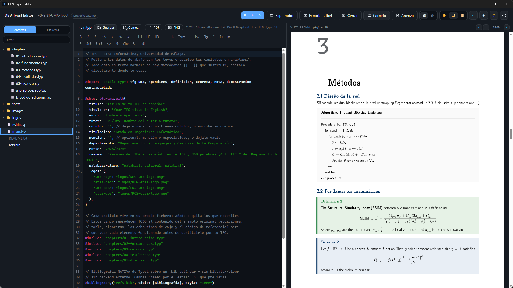
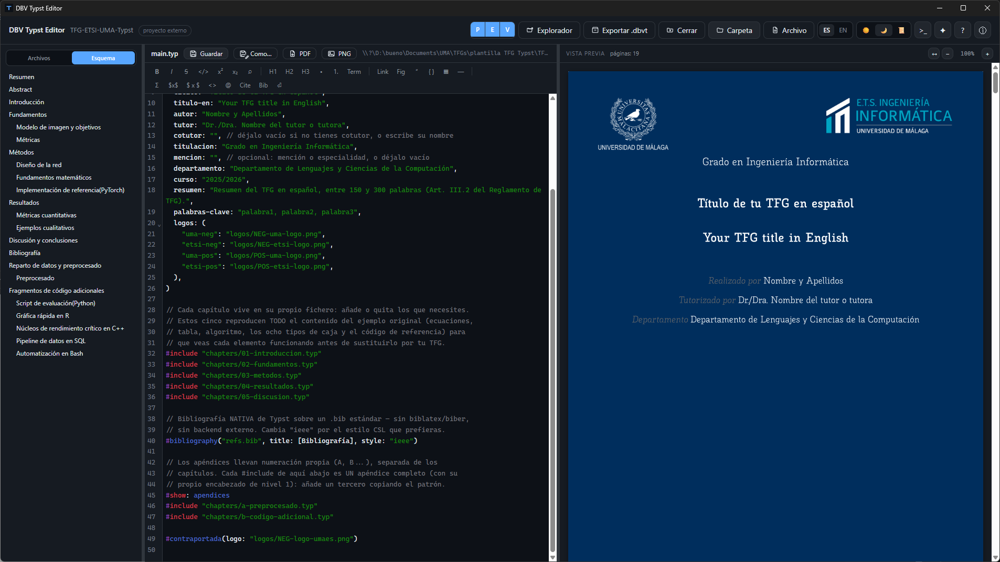
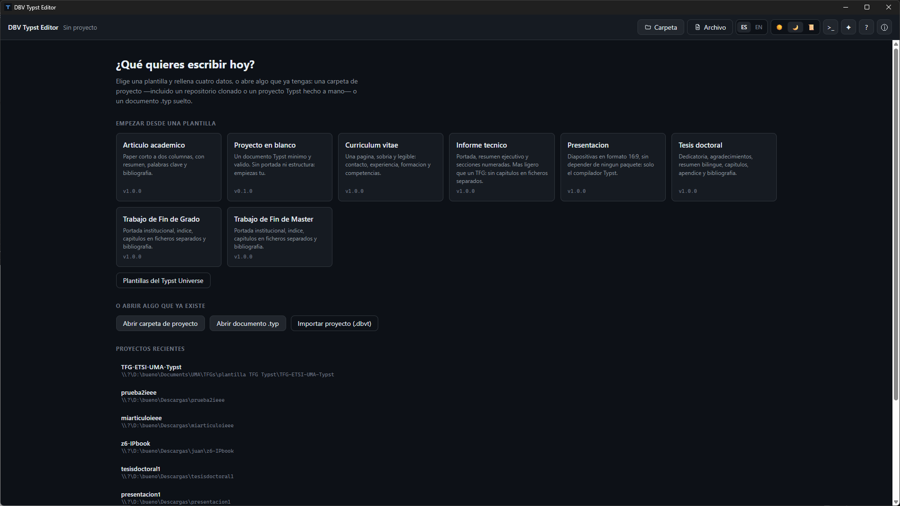
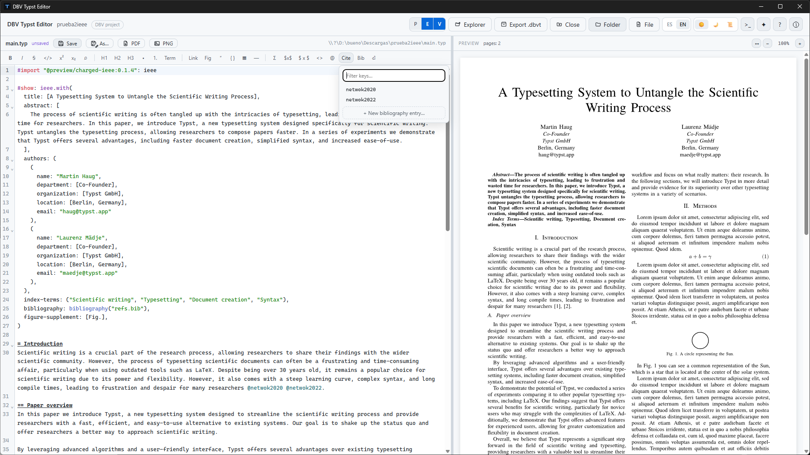
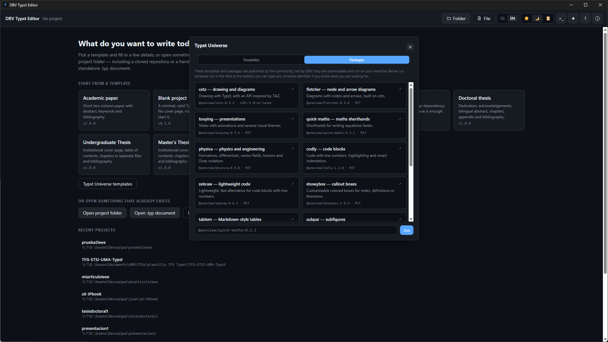
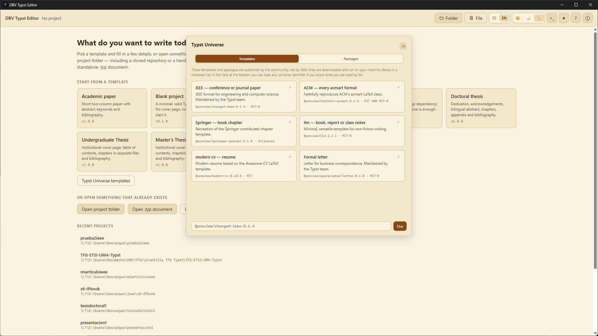
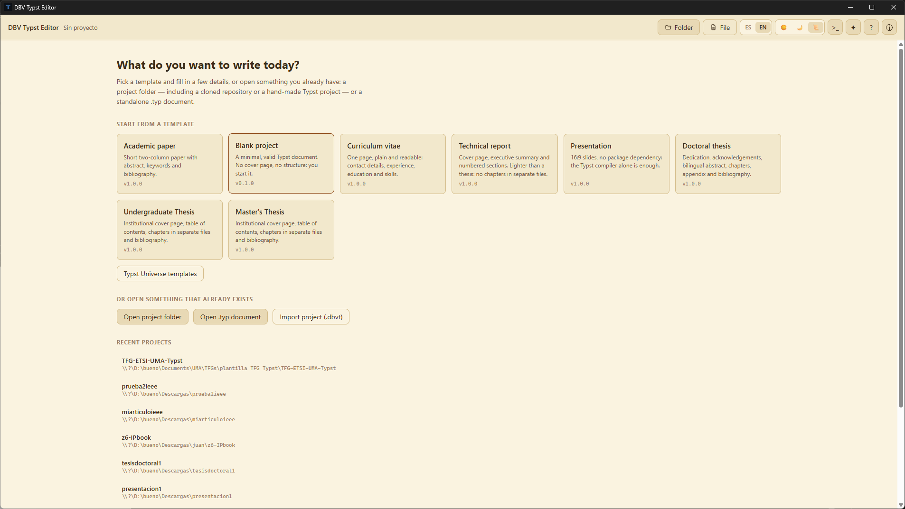
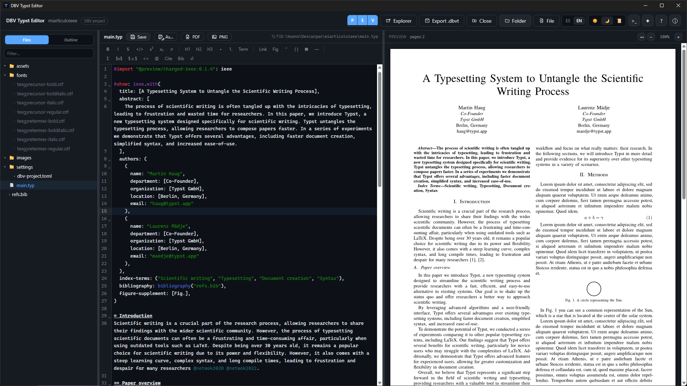
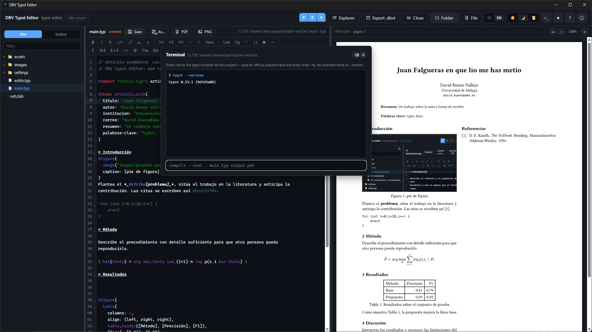

Real-time preview
The PDF recompiles on its own after every writing pause, page by page, with zoom and fit-to-width.
Free · Open source · Windows, macOS & Linux · English/Español
Start your thesis, dissertation, or paper from an academic template and write while the PDF updates on its own, with nothing to click. The Typst compiler ships inside the app itself: everything works offline.
Available for Windows 10/11 (.exe & Microsoft Store), macOS (universal .dmg) and Linux (.AppImage, .deb) · No account, no ads, no telemetry · A project created here is an ordinary Typst project, no lock-in

Typst is a modern typesetting compiler, much faster than LaTeX and without its arcane syntax — but it still required a terminal and any old text editor to use. DBV Typst Editor bundles the official Typst compiler inside the app itself (Rust + Tauri v2, no Electron) and adds what a real academic document needs: templates with a data form, citation and image assistants, and a preview that updates on its own as you type.
None of this locks you in: the project you create is an ordinary Typst directory, which compiles just as well from the terminal with the official CLI. If you ever stop using DBV Typst Editor, your document is still yours.
The PDF recompiles on its own after every writing pause, page by page, with zoom and fit-to-width.
Formatting, headings, tables, equations and math symbols without learning the syntax, unless you want to.
A dropdown with the real keys from your .bib file, plus a form to create new entries without leaving the editor.
Drop images (auto-inserted with figure captions), whole project directories, or .otf/.ttf typefaces into fonts/ so they travel anywhere with your document.
A heading panel with click-to-jump straight to that page in the preview.
Community templates and packages, with the license shown before installing anything.
Ctrl + F inside the editor, without leaving the document.
The whole project — chapters, images, bibliography and its own fonts — in a single file to share.
An optional escape hatch to the Typst CLI, for anyone who prefers working with commands.
A fonts/ folder travels with the project — it composes identically on any machine.
Light, Dark and Sepia for long writing sessions — your choice is remembered.
Full interface in both languages, including the built-in help.
Click on any screenshot to view it in full size. A carefully crafted visual environment that makes writing technical and academic documents a breeze.
Write with native syntax highlighting and watch your document, algorithms, and math formulas typeset page by page without pressing a single button.

Jump directly to any section of the live preview using the sidebar outline panel, and compose professional university covers effortlessly.

Start your bachelor thesis, master thesis, dissertation, research paper, technical report, 16:9 presentation, CV, or blank project in one click.

Filter keys from your .bib file in real time, and insert equations, math symbols (Σ), tables, and figures without memorizing syntax.

Explore and import community packages (cetz for charts, touying for slides, codly for code snippets) with clear open-source license visibility.

Bootstrap conference and journal papers formatted for IEEE, ACM acmart, and Springer with pre-configured layouts in a single click.

Rest your eyes during long writing sessions with our custom Sepia or Dark themes, and switch smoothly between English and Spanish.

A dedicated fonts/ folder travels inside your project and .dbvt archive: your document renders with identical typography everywhere.

An optional escape hatch for advanced users wanting to run direct Typst subcommands and custom flags without leaving the application.
Each one is a self-contained Typst project: compiles offline, with the fonts it needs already included.
Ready-to-use installers for Windows (.exe & Microsoft Store), macOS (universal .dmg), and Linux (.AppImage, .deb) from the Releases page. No Rust or Node dependencies.
The launcher asks what you want to write today. Fill in the form (title, author, institution...) and the project creates itself.
The PDF composes itself as you type. Save with Ctrl + S, export whenever you like.
Free, open source, no strings attached. Available for Windows, macOS, and Linux.